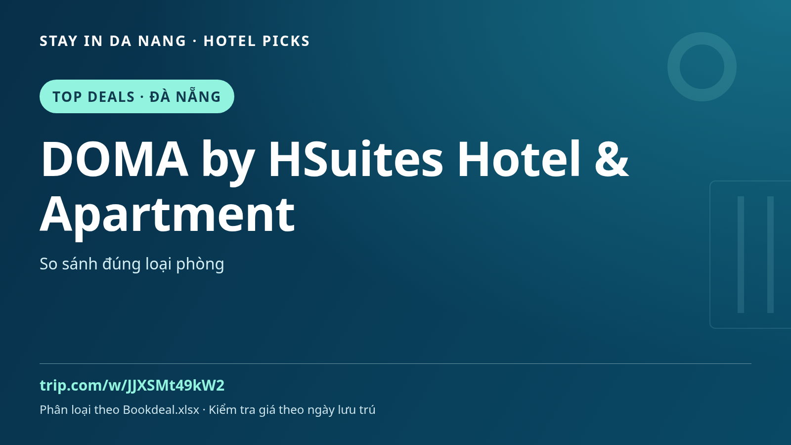

DOMA by HSuites Hotel & Apartment | Tempat menginap di Da Nang, Vietnam: panduan
Merencanakan Da Nang? Tambahkan DOMA by HSuites Hotel & Apartment ke perbandingan penginapan sambil menjelajahi makanan, budaya dan wisata harian Vietnam tengah.

Cara mempertimbangkan DOMA by HSuites Hotel & Apartment
Cocokkan lokasi dengan rute terlebih dahulu. Baca ulasan terbaru, foto kamar, pembatalan, sarapan dan transportasi. Fasilitas, harga dan ketersediaan berbeda menurut tanggal serta kamar: pastikan pada halaman pemesanan, bukan dari nama atau foto promosi.
Ide sekitar Da Nang
Sisakan waktu untuk My Khe, Sungai Han dan perjalanan terpisah ke Hoi An. Ini tidak menjamin hotel berada di samping tempat tersebut. Bandingkan tanggal, rencanakan transfer serta transportasi lokal dan beri waktu istirahat.
Sebelum memesan
- Pastikan alamat dan transportasi perjalanan.
- Bandingkan kamar, tamu, makanan, pajak dan pembatalan.
- Periksa ketersediaan serta harga akhir pada tanggal Anda.